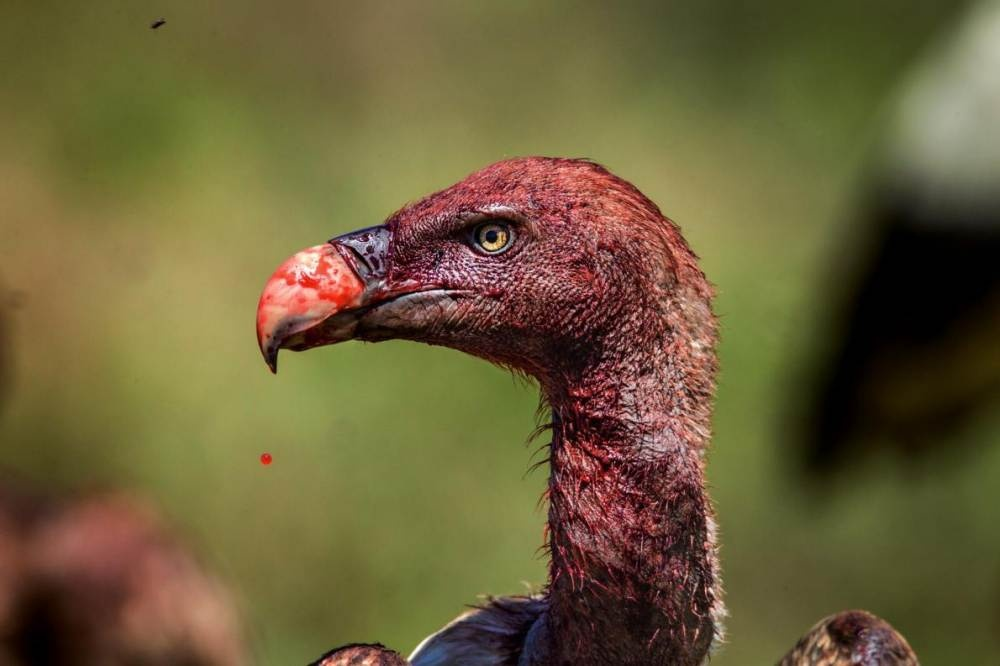
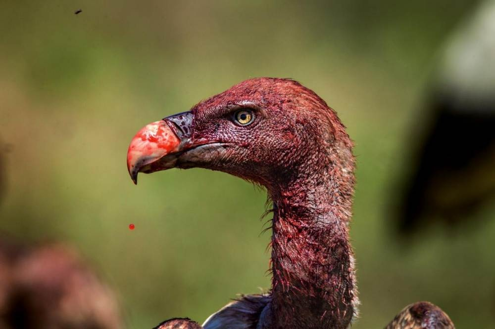

How wild animals lives
Wild animals survive by constantly adapting to the challenges of nature. Without shelters built by humans or food provided for them, they rely on their instincts and physical abilities. Each day, they search for food, protect themselves from predators, and find safe places to live. Many animals use unique skills—like camouflage, speed, or sharp senses—to stay alive in a world full of danger. Despite the harshness of their environment, wild animals continue to thrive by passing on these abilities to their young, ensuring that their species can endure. In this way, survival in the wild becomes not just a struggle, but a remarkable example of nature's resilience
| Animal | Life Span | Diet | Predators | Behavior / Grouping |
|---|---|---|---|---|
| Lion | 10-14 years | Meat | Hyenas (conflict), humans | Lives in groups called prides; cooperative hunting |
| Cheetah | 10-12 years | Meat (mainly antelope) | Lions, hyenas, leopards | Mostly solitary; mothers raise cubs alone |
| Elephant | 60-70 years | Plants (grass, leaves, bark) | Lions (calves), humans | Large social herds led by a matriarch |
| Giraffe | 20-25 years | Leaves and twigs | Lions, hyenas | Loose social groups; strong kicking defense |
| Zebra | 20-30 years | Grass | Lions, hyenas, wild dogs | Lives in herds; uses stripes for confusion |
| Hyena | 20-25 years | Meat (hunting & scavenging) | Lions, humans | Highly social; lives in clans with strong hierarchy |
Prey
 

In the African savanna, prey animals face constant danger, yet they have developed many ways to survive. Life in the open grasslands offers little protection, so animals like zebras, gazelles, and antelopes rely on their speed and awareness. Many prey animals have eyes positioned on the sides of their heads, giving them a wide field of vision to spot predators approaching from far away.
Another important survival strategy is living in large groups. In a herd, many eyes are watching for danger, and an individual is less likely to be caught. When a predator appears, the group may scatter in different directions, making it harder for the hunter to focus on one target. Some animals also use camouflage; their colors and patterns help them blend into the dry grasses of the savanna.
Prey animals also take advantage of the environment. They stay near watering holes at safe times of day, rest in shaded areas to save energy, and migrate long distances to follow fresh grass. These behaviors help them avoid becoming easy targets.
Overall, prey in the savanna survive through speed, alertness, group living, and smart use of the land. Their daily lives show how strong and adaptable they must be in order to live in one of the world's most dangerous habitats.
Predator The Legendary Lion of the Maasai Mara
Scarface was one of the most iconic lions ever to roam the Maasai Mara in Kenya. He earned his name from the deep scar over his right eye—a wound from a territorial fight that never fully healed. This injury, instead of weakening him, became a symbol of his strength and resilience. Scarface ruled as part of a powerful coalition of four male lions, and together they controlled a vast territory and many prides.
Despite his fierce appearance, Scarface was known for his calm and gentle behavior around humans and vehicles. Photographers and researchers admired how close he allowed people to get, making him one of the most photographed lions in Africa. As he grew older, his injuries and battles took a toll on his body, but he continued to survive far longer than most wild male lions. Scarface passed away naturally in 2021, lying peacefully in a place he knew well.
Today, he is remembered not only as a dominant and powerful lion, but as a symbol of endurance, beauty, and the raw, untamed spirit of the wild.